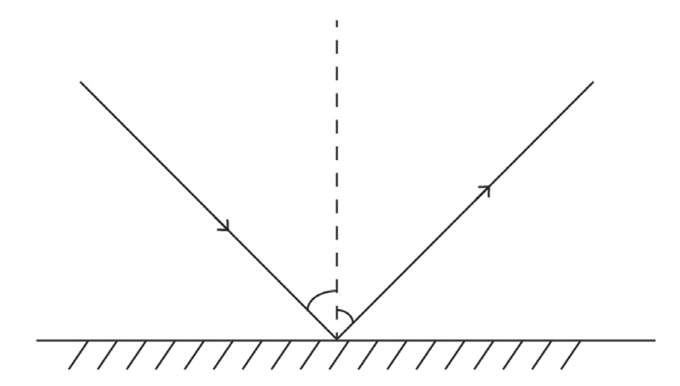

light. When light encounters a surface, it predictably changes direction, following specific principles known as the laws of reflection. These laws govern how light interacts with reflective surfaces, such as mirrors (Figure 4.12) and determine the path of the reflected rays. They are essential for understanding the behaviour of optical systems and have practical applications in fields ranging from astronomy to everyday technologies like periscopes, cameras, and fibre optics. Activity 4.4 aids in experimental exploration on laws governing reflection of light.

There are two laws of reflection that can be stated as follows:
1. The angle of incidence is equal to the angle of reflection. This means the angle at which the incoming light ray strikes a surface (the angle of incidence) is identical to the angle at which it is reflected away (the angle of reflection).
2. The incident ray, the reflected ray, and the normal to the reflective surface all lie in the same plane.
This ensures that the reflection is constrained to a two-dimensional plane defined by the light ray and perpendicular to the surface at the point of incidence.